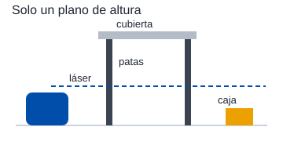
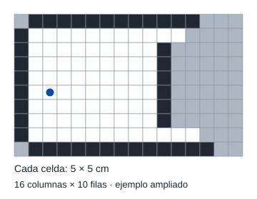
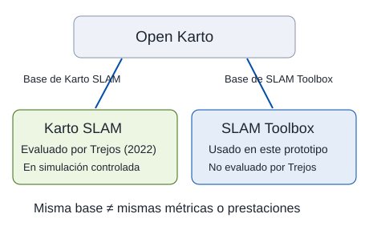
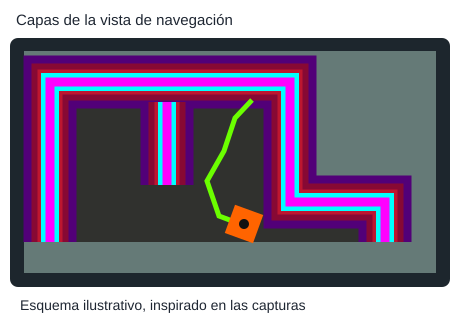

Para hacer un mapa hay que saber dónde está el robot, y para saber dónde está hace falta un mapa. Este tema explica cómo un láser que gira resuelve ese círculo, qué no alcanza a ver y cómo leer los mapas que construyó el robot real.
NivelLectura
El RPLidar A1, el único sensor de percepción del robot. Imagen de Slamtec.
El mismo espacio mapeado en cinco corridas
El robot recorrió el mismo recinto en seis ejecuciones independientes. Cinco produjeron mapas válidos: en ellas quedó registrado un promedio de 3,50 m² de espacio libre, entre 3,478 y 3,540 m². Son cinco mapas de distintas corridas; no cinco partes de un único mapa 1.
Para construir cada mapa, el LiDAR toma un barrido: un conjunto de distancias en distintas direcciones. SLAM Toolbox estima desde dónde se tomó cada barrido y enlaza esas posiciones en un grafo de poses. Si reconoce un lugar visitado, puede corregir las estimaciones anteriores. Más abajo veremos cada paso por separado.
¿Por qué cambia el porcentaje si el área es casi igual? El índice divide el espacio libre por las celdas libres y desconocidas de la imagen guardada. Una imagen con más margen desconocido da un porcentaje menor, aunque contenga casi los mismos metros cuadrados libres. El 62,2 % no significa que el robot haya visto el 62,2 % del recinto. Ver las cinco corridas y sus indicadores.
3,50 m²área libre mapeada en promedio, con dispersión de solo 0,03 m²
62,2 %índice medio de cobertura libre, un indicador relativo a la imagen
5 cmlado de cada celda del mapa
5 de 6ejecuciones que produjeron un mapa válido
Cómo ve un LiDAR 2D
Un LiDAR mide distancias con luz láser. Algunos miden el tiempo que tarda el pulso en volver 2 y otros, como el RPLidar A1 de este robot, usan triangulación óptica, es decir, calculan la distancia según el ángulo con que vuelve la luz reflejada 3. En un LiDAR 2D el emisor y el receptor giran sobre un eje vertical y entregan, en cada vuelta, pares de ángulo y distancia en un plano horizontal. Con eso se detectan paredes y obstáculos 1.
Lo que ve el láser, y lo que no
Interactivo · ilustrativo
Comprueba tres ideas: el láser se detiene en el primer obstáculo, solo detecta lo que cruza su altura y una lectura ausente no demuestra que el espacio esté libre. Elige un caso y mueve el robot con los controles o con las flechas.

Un LiDAR 2D observa una sección horizontal, no todo el volumen de los objetos.
El modelo ideal devuelve el primer impacto. Los casos de vidrio y absorción se muestran como ejemplos posibles, no como probabilidades medidas. Necesita JavaScript.
Sus límites principales son dos. No detecta objetos fuera de su plano de barrido, como la cubierta de una mesa o una caja baja, y su medición se degrada ante superficies muy reflectantes, como el vidrio, o muy absorbentes, como una tela negra 1. El recinto de pruebas usa paneles opacos y de color, una elección razonable para un primer prototipo, pero que deja fuera los casos difíciles de una oficina real.
Un obstáculo corta el barrido y deja una zona de sombra detrás. Esa zona puede descubrirse después desde otra posición; un solo barrido no contiene el mapa completo. Fig. 4.3 de la tesis.
El mapa como una rejilla
El mapa que construye el robot es una rejilla de ocupación. El plano se divide en celdas, aquí de 5 cm por lado, y cada una queda como libre, ocupada o desconocida 4. Al guardarse, el mapa es una imagen en escala de grises en la que lo claro es libre, lo oscuro es ocupado y el gris intermedio es desconocido 1.
De un rayo a las celdas del mapa
Interactivo · ilustrativo
Avanza paso a paso: las celdas antes del impacto se observan libres, la del impacto ocupada y las de atrás siguen desconocidas. Después añade otro barrido o inspecciona cualquier celda.

Ejemplo de rejilla de ocupación. Cada cuadrado representa 5 × 5 cm, aunque se dibuja ampliado.
En el mensaje nav_msgs/OccupancyGrid se transportan valores cuyo significado depende del programa que publica el mapa. En este ejemplo usamos 0 = libre, 100 = ocupado y −1 = desconocido17. El mapeo real combina varias observaciones y puede conservar valores intermedios de incertidumbre; no colorea todo el mapa de una vez.
Sobre esa rejilla trabajan los demás módulos. La navegación agrega un margen de seguridad alrededor de los obstáculos, y el explorador busca los bordes entre lo libre y lo desconocido. Ambos temas tienen su propia página.
Marcos de referencia: mapa, odometría y robot
Un marco de referencia es un origen con ejes desde el que medimos posiciones. Aquí seguimos dos convenciones de ROS: REP 103 define unidades SI y ejes en un sistema de mano derecha 5; REP 105 define los nombres, funciones y relaciones de los marcos de una plataforma móvil 6. En el marco del cuerpo del robot, x apunta hacia adelante, y hacia su izquierda y z hacia arriba. En map y odom, los ejes no giran cada vez que gira el robot.
map · referencia global
Sirve para ubicar el robot y los obstáculos en el mapa. SLAM busca mantener coherencia a largo plazo; su estimación puede saltar al corregirse. No garantiza una posición exacta.
odom · referencia local
Suma el movimiento estimado por las ruedas. La pose cambia de forma continua, pero puede acumular deriva. Sirve para seguir el movimiento a corto plazo.
base_link · cuerpo del robot
Su origen y sus ejes viajan con el chasis. El marco del láser queda unido al cuerpo por la posición y orientación de su montaje.
Quién publica cada transformación
TF es el sistema de ROS que relaciona estos marcos. En map → odom → base_link → marco del láser, cada flecha expresa la pose del marco hijo respecto del padre, no una orden de movimiento. El nombre concreto del marco del sensor depende del modelo URDF.
Relación
Quién la publica
Qué aporta
map → odom
slam_toolbox
Corrección entre la referencia global y la referencia odométrica.
odom → base_link
Controlador diferencial
Pose continua calculada con los encoders.
base_link → láser
Modelo URDF y publicador de estado del robot
Montaje fijo del sensor, directamente o a través de marcos intermedios.
Cadena conceptual según REP 105 y la arquitectura descrita en la tesis. El árbol real puede incluir marcos intermedios 16.
Dónde se compensa la deriva: map → odom
Interactivo · ilustrativo
Haz avanzar el robot y activa la corrección. La lectura de las ruedas conserva su error; cambia la relación que permite expresar esa pose en el mapa.
Ejemplo rectilíneo: odom estima 2,08 m y SLAM estima 2,00 m. La corrección map → odom es −0,08 m: −0,08 + 2,08 = 2,00 m. Los encoders no se recalibran. Necesita JavaScript.
El 3,63 % no es un sesgo identificado del encoder. Es el error relativo medio de la prueba de odometría en una recta de dos metros. SLAM puede compensar la deriva estimada con observaciones válidas del entorno; esto no demuestra que elimine ese porcentaje en cualquier recorrido ni que el mapa sea exacto. En esta tesis no se midió el error absoluto del mapa.
La misma relación con traslación y giro
La composición es T(map, base_link) = T(map, odom) · T(odom, base_link). Por tanto, T(map, odom) = T(map, base_link) · inversa(T(odom, base_link)). Las transformaciones combinan posición y orientación; solo en el ejemplo rectilíneo sin giro se reducen a una suma o resta de metros.
Los marcos del modelo en RViz. Cada trío de ejes rojo, verde y azul es un marco, con x, y y z. Captura del autor.
SLAM: mapear y ubicarse a la vez
SLAM significa localización y mapeo simultáneos: estima la pose del robot mientras construye un mapa del entorno 7. La odometría ofrece una primera estimación del movimiento; el láser permite contrastarla con la geometría observada.
¿Qué significa alinear dos barridos?
Son dos conjuntos de medidas tomados en momentos distintos por el mismo LiDAR, no dos sensores. El barrido A puede tomarse antes de avanzar y el B después. La misma pared aparece en coordenadas distintas respecto del sensor. El ajuste de barridos busca la traslación y el giro que hacen coincidir sus partes comunes; así estima cuánto se movió el robot 118.
La misma esquina, antes y después de avanzar
Interactivo · ilustrativo
Arriba ves los dos barridos en sus marcos locales. Abajo, superpón B sobre A: mueve el control o pide el ajuste. La esquina queda fija y la estimación del desplazamiento cambia.
A observa una esquina. Tras avanzar 30 cm, B ve la misma esquina 30 cm más cerca. Para superponer las medidas de B en el marco de A hay que trasladarlas 30 cm. Ejemplo sin giro. Necesita JavaScript.
Qué es un grafo de poses
Es una red de estimaciones de dónde estuvo el robot. Una pose incluye x, y y orientación θ. Un nodo guarda una pose y el barrido asociado; una arista expresa una restricción de movimiento relativo entre dos poses. No es una rejilla de paredes ni un conjunto de destinos de navegación.
Nodo · «estuve aquí»
Un círculo con una flecha: posición y dirección del robot cuando se tomó una observación.
Arista · «me moví así»
Relaciona dos nodos con un desplazamiento y un giro estimados a partir de odometría y ajuste de barridos.
Cierre de lazo · «ya conocía este lugar»
Una observación compatible une el presente con una pose antigua y añade una restricción para corregir la trayectoria.
Grafo de poses y cierre de lazo
Interactivo · ilustrativo
Recorre cuatro pasos: acumular deriva, reconocer el inicio, optimizar las poses y publicar la corrección map → odom. Inspecciona un nodo para ver su posición y orientación.
Los nodos guardan poses y las líneas restricciones. El cierre de lazo añade una relación con el inicio. Optimizar cambia las poses del grafo; publicar map → odom relaciona la pose actual corregida con la odometría, que sigue conservando su deriva. Necesita JavaScript.
Al optimizar el grafo, el sistema busca poses que concuerden mejor con sus restricciones. Los barridos se recolocan con esas poses para reconstruir la rejilla. Después, la transformación map → odom permite expresar la pose odométrica actual en la referencia del mapa. Reajustar los nodos históricos y corregir TF son operaciones relacionadas, pero distintas: una transformación rígida actual no deforma por sí sola todo el recorrido pasado 618. El tutorial de Grisetti y otros amplía esta idea 8.
SLAM Toolbox en este robot
El robot usa slam_toolbox, un SLAM 2D por grafos de poses para ROS 29, en modo asíncrono en línea. Puede descartar barridos para atender datos recientes cuando no alcanza a procesarlos todos; asíncrono no significa carga de cálculo nula. Tiene el cierre de lazo activado y usa Ceres para la optimización. Corre en el computador, no en la Raspberry Pi, y su uso de procesador no se midió 1.
Qué es el resolvedor Ceres y para qué sirve
Ceres Solver es una biblioteca de optimización numérica. Un resolvedor es el componente que busca una solución a un problema matemático. Aquí recibe las poses iniciales y las restricciones del grafo, y ajusta posiciones y orientaciones para reducir la suma ponderada de las discrepancias, llamadas residuos1819.
Entrada
«Las ruedas indican este movimiento; el láser indica que volví a una zona conocida». Las mediciones pueden contradecirse.
Trabajo del resolvedor
Prueba ajustes de x, y y θ para disminuir el desacuerdo total, teniendo en cuenta los pesos de las restricciones.
Salida
Un conjunto de poses más consistente. SLAM Toolbox lo usa para actualizar el mapa y calcular la corrección de TF.
Ceres no mide distancias ni reconoce por sí solo un lugar: esas observaciones y asociaciones las prepara SLAM. Puede quedar error residual; una asociación incorrecta o mediciones pobres no se vuelven correctas solo por optimizar.
En los resultados el cierre de lazo figura como no determinado, porque el análisis posterior no detecta automáticamente si ocurrió. La consistencia de los mapas la evalué a la vista.
Un tutorial práctico del mismo autor de los paquetes en que se basa este robot. Fuente 11
Por qué slam_toolbox y no otro
Alternativa
Fortaleza
Limitación
GMapping
Rejilla con filtro de partículas, buen desempeño en escenas pequeñas.
Depende de una odometría consistente; no utiliza el detector explícito de cierre de lazo de un grafo de poses. Su integración con ROS 2 fue una limitación para este proyecto.
Hector SLAM
Puede operar con poca dependencia de la odometría.
Necesita un láser de alta tasa de barrido para contener la deriva.
Cartographer
Buena consistencia global y cierre de lazo.
Configuración más compleja y el mayor uso medio de CPU en una comparación independiente.
slam_toolbox
Integración con ROS 2, grafo de poses y almacenamiento de mapas.
En modo asíncrono puede omitir mediciones si la anterior se atrasa.
Tabla 1.2 de la tesis, con base en Ran y otros, Trejos y otros, y Macenski y Jambrecic.
Trejos y otros compararon cinco algoritmos en condiciones de simulación comunes 12. Su conclusión favoreció a Karto por su equilibrio entre desempeño y recursos en esos ensayos. No probaron slam_toolbox. La conexión con esta tesis es de arquitectura: ambos utilizan una base de Open Karto, pero eso no traslada automáticamente los resultados de un programa al otro 9.
Qué comparó Trejos y cómo se conecta
Fuentes citadas
1
La pregunta del estudio
¿Qué algoritmo ofrece un buen mapa y una buena estimación de pose usando pocos recursos? Usaron un TurtleBot 3 Burger simulado en Gazebo, con recorridos controlados.
Comparados: Cartographer, GMapping, Hector SLAM, Karto SLAM y RTAB-Map.
Medida
Qué permite comparar
Error de pose
Cuánto difiere la posición y orientación estimadas de la referencia de la simulación.
Precisión del mapa
Cuánto se parece el mapa construido al entorno de referencia.
CPU y memoria
Qué recursos necesita el programa durante el ensayo.
2
La conexión técnica, no una nueva comparación

Compartir una base ayuda a explicar la elección, pero no demuestra igual rendimiento.
3
Lo que decidió este proyecto
Se eligió SLAM Toolbox por su integración con ROS 2, el grafo de poses, el cierre de lazo y la posibilidad de guardar mapas. Se verificó que funcionara en el prototipo; no se midió su CPU ni se comparó su precisión con los otros algoritmos.
Así crece el mapa en el robot real
Cuatro momentos de una misma exploración. A la izquierda, la cámara cenital sobre el recinto. A la derecha, RViz, el programa que muestra los datos del robot. La línea verde es la ruta que planifica la navegación hacia la frontera elegida, no el camino ya recorrido.
La exploración en cuatro capturas, en bucle. A la izquierda de cada panel, la cámara cenital, y a la derecha RViz. Fig. A7.1 de la tesis.
Explora cada etapa a tu ritmo con los botones.
Cómo leer los colores de esta vista de RViz
Esta captura superpone un mapa de costos para navegar, la ruta planificada y el modelo del robot. No es la rejilla de ocupación en escala de grises que vimos antes. Los colores dependen del esquema y las capas activadas en RViz; la siguiente leyenda corresponde a las capturas de este proyecto.
Una leyenda visual, capa por capa
Ilustración interactiva
Selecciona un color para resaltarlo y leer qué representa. Puedes ocultar las capas de navegación para distinguirlas del mapa.

Esquema ilustrativo de las capas observadas en las capturas, no un nuevo resultado experimental.
El magenta marca obstáculos; el celeste representa el costo inscrito asociado al tamaño del robot, y el degradado de rojo a violeta añade un costo por cercanía 20. No son paredes de distintos materiales. El gris representa celdas desconocidas. El oscuro dentro del mapa es libre sin costo añadido; el fondo oscuro fuera del mapa no aporta información de ocupación. El verde muestra una ruta futura y el naranja, el modelo o la huella del robot. Cómo se calculan los márgenes se explica en Planificar y seguir rutas.
Resultados de mapeo y cómo leerlos
De seis ejecuciones de exploración en el robot real, cinco produjeron un mapa válido. Para cada una calculé dos indicadores a partir del mapa guardado 1. El área libre mapeada, que es el número de celdas libres por el área de cada celda. Y el índice de cobertura libre, que divide las celdas libres por la suma de celdas libres y desconocidas de la imagen.
Mismo espacio, distinto índice
Datos de la tesis
El índice depende de cuántas celdas desconocidas quedan en la imagen, que no está anclada al recinto.
Índices de 82,9, 53,5, 54,2, 67,1 y 53,4 %. Áreas libres de 3,510, 3,540, 3,478, 3,483 y 3,478 m².
El área libre fue casi la misma en las cinco corridas, entre 3,478 y 3,540 m². El índice de cobertura, en cambio, saltó entre 53,4 % y 82,9 %. La razón es que la imagen del mapa no tiene un tamaño fijo, y cambia cuántas celdas desconocidas quedan a su alrededor. Por eso tomo como evidencia principal el área libre y el hecho de que las cinco corridas terminaron solas, y uso el índice como indicador complementario 1.
Un indicador estable que mide lo correcto vale más que uno espectacular que depende del encuadre.
Ninguno de los dos mide el error absoluto del mapa, porque no se dispuso de un plano medido del recinto para compararlo. Por eso el SLAM se declara verificado en funcionamiento y caracterizado, no validado. La diferencia entre esas palabras se explica en La evidencia.
Un mapa de interiores es un dato personal
Un plano generado por un robot dice cuántas habitaciones tiene una casa, cómo se conectan y dónde están los muebles. En 2017, el director de la empresa que fabrica Roomba comentó que esos mapas podrían compartirse con otras compañías de hogar inteligente, y tras la polémica la empresa aclaró que no vendería los datos de sus clientes 13. En 2022 se conoció que imágenes tomadas dentro de hogares por versiones de desarrollo de una aspiradora robot terminaron publicadas en redes sociales por trabajadores contratados para etiquetarlas 14.
Este robot solo usa un láser y guarda sus mapas en el computador del proyecto. Aun así, quien lleve esta tecnología a casas u oficinas debería decidir desde el diseño dónde se guardan los mapas, quién accede a ellos y cuándo se borran. El tema se amplía en Lecciones de ingeniería.
Muchos modelos llevan una torre con un láser giratorio y guardan el plano de la casa para reutilizarlo en cada limpieza.
Usan el mismo tipo de LiDAR 2D que este robot y comparten su límite de ver un solo plano, así que un cable en el piso no aparece en el mapa. Ver el caso completo.
TesisValderas Neculqueo, S. (2026). Navegación y exploración autónoma de interiores utilizando un robot móvil de tracción diferencial. UTEM. Secciones 1.3, 3.1, 3.3.1, 3.8, 4.2.2, 4.5.1 y 5.3, y Anexos 3.4, 5.4, 7 y 8.
Hoja de datosShanghai Slamtec (2020). RPLIDAR A1 Low Cost 360 Degree Laser Range Scanner. wiki.slamtec.com
ArtículoMacenski, S., Moore, T., Lu, D. V., Merzlyakov, A. y Ferguson, M. (2023). From the desks of ROS maintainers. Robotics and Autonomous Systems, 168. doi.org/10.1016/j.robot.2023.104493
Norma ROSFoote, T. y Purvis, M. (2010). REP 103: Standard Units of Measure and Coordinate Conventions. Open Robotics · REP 103
Norma ROSMeeussen, W. (2010). REP 105: Coordinate Frames for Mobile Platforms. Open Robotics · REP 105
LibroThrun, S., Burgard, W. y Fox, D. (2005). Probabilistic Robotics. MIT Press.
ArtículoGrisetti, G., Kümmerle, R., Stachniss, C. y Burgard, W. (2010). A Tutorial on Graph-Based SLAM. IEEE Intelligent Transportation Systems Magazine, 2(4). doi.org/10.1109/MITS.2010.939925
ArtículoMacenski, S. y Jambrecic, I. (2021). SLAM Toolbox: SLAM for the dynamic world. Journal of Open Source Software, 6(61). doi.org/10.21105/joss.02783
ArtículoTrejos, K., Rincón, L., Bolaños, M., Fallas, J. y Marín, L. (2022). 2D SLAM Algorithms Characterization, Calibration, and Comparison. Sensors, 22(18). doi.org/10.3390/s22186903
PrensaMIT Technology Review (2017, 25 de julio). Your Roomba is also gathering data about the layout of your home. technologyreview.com
PrensaGuo, E. (2022, 19 de diciembre). A Roomba recorded a woman on the toilet. How did screenshots end up on Facebook? MIT Technology Review. technologyreview.com
FabricanteDreame Technology. LiDAR navigation in robot vacuums. dreametech.com
Mensaje ROSROS 2 common_interfaces. Definición de nav_msgs/OccupancyGrid, rama Foxy, utilizada por este proyecto. Definición del mensaje.
DocumentaciónSLAM Toolbox. Funcionamiento del grafo, reconstrucción del mapa, publicación de map → odom y resolvedores de optimización. ROS Index · SLAM Toolbox.
Código RVizROS 2 RViz. Construcción de la paleta de costos. Paletas de Map Display. Los colores de las capturas se contrastaron con las imágenes originales del repositorio.